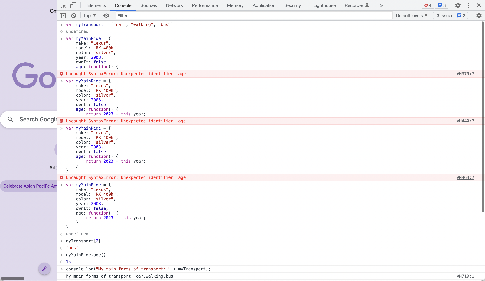
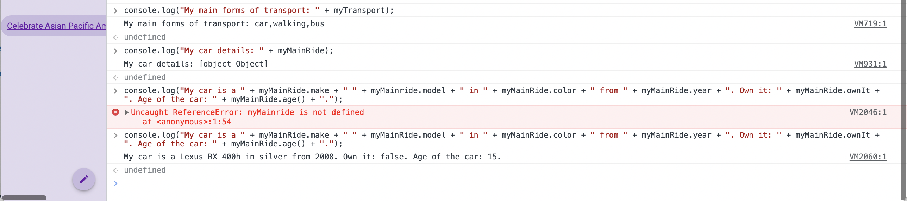
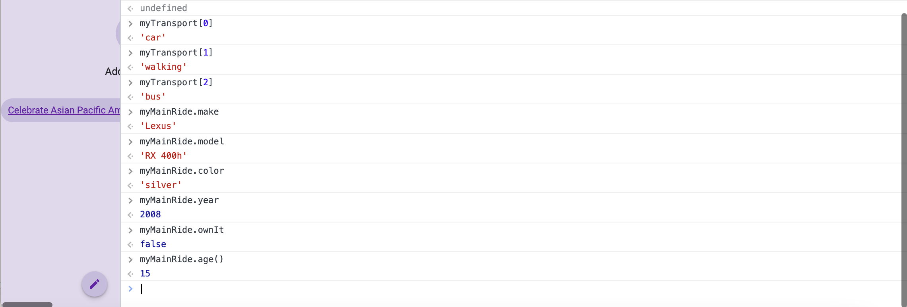
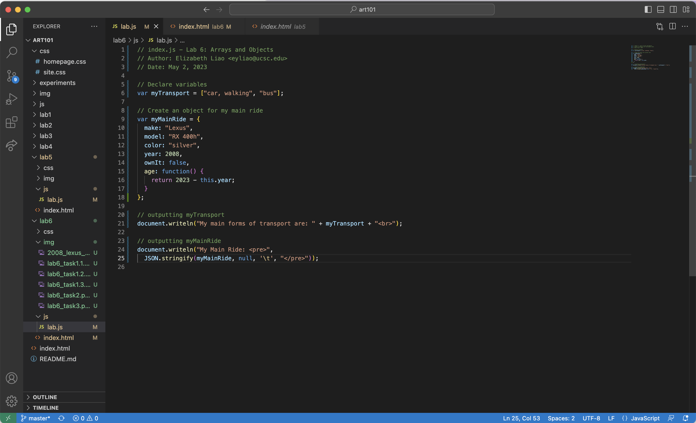
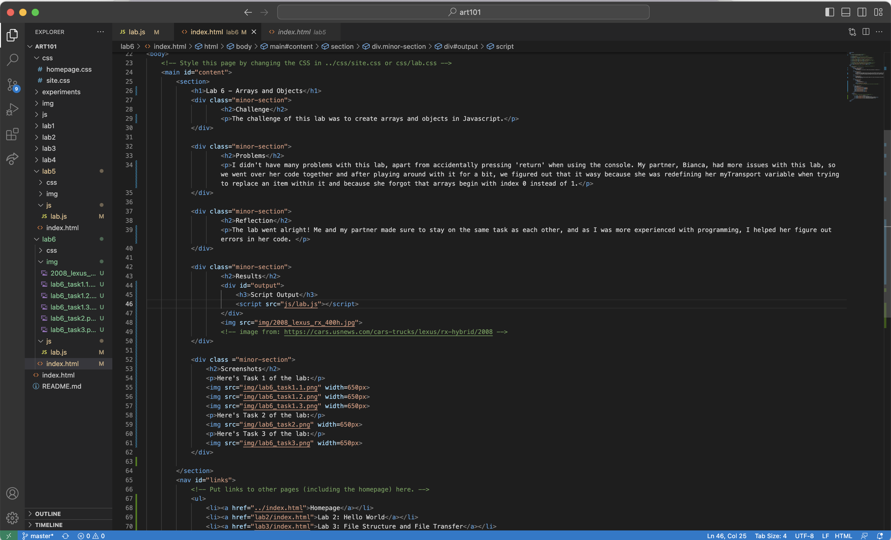

Lab 6 - Arrays and Objects
Challenge
The challenge of this lab was to create arrays and objects in Javascript.
Problems
I didn't have many problems with this lab, apart from accidentally pressing 'return' when using the console. My partner, Bianca, had more issues with this lab, so we went over her code together and after playing around with it for a bit, we figured out that it wasy because she was redefining her myTransport variable when trying to replace an item within it and because she forgot that arrays begin with index 0 instead of 1.
Reflection
The lab went alright! Me and my partner made sure to stay on the same task as each other, and as I was more experienced with programming, I helped her figure out errors in her code.
Results
Script Output
Screenshots
Here's Task 1 of the lab:
  Here's Task 2 of the lab:
Here's Task 3 of the lab:
